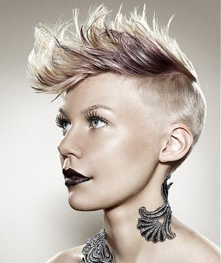
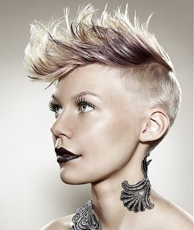

Straight and Sleek
August 10th, 2013
Beautiul or just plain damaging?
Every girl between the ages 12-20 seem to straighten their hair on the daily.
I'd be so surprised every time a girl came in with pin straight hair, only to wash it and have it spring to life in perfect curls. Why do each and every young girl, or so it seems, have to flat iron their hair everyday before school?
It's crazy that so many people can't embrace their curl!
Curly hair can be a struggle, I know. But it can also be a time saver. Why bother flat ironing your hair if you can simply wet it down, throw in some mousse and walk out the door looking fab?
I guess that's just the in thing right now in high schools.


Ballerina Bun.
July 25th, 2013
The easiest style ever
For days you slept in a little too late.
The ballerina bun saves my butt most mornings I have an early class.
It's amazing how easy it is for all hair types, and lengths, and tends to look good on everybody. I guess it's the fact that your hair looks to be in an up-do when really it took only 5 minutes. It's a great time saver if you need to rush out the door but still need to look presentable.
Personally, I enjoy adding extensions to my bun because of how fine my hair is, but if you're blessed with thick hair already you can buy little 'donut' accessories to make it perfect.
Punk
June 2nd, 2013
Hair with Attitude.
I love alternative hair. The fact that you want to stand out from the crowd by showcasing your own unique 'do, is just rad to me.
Personally, I don't think I could take a razor to my head, but props to the girls and guys who can! And who can pull it off.
Faux-hawks on women will forever be in my heart. That's the shortest I've ever gone and probably ever will at least until I'm older.
It's the unique razor-cuts, funky colours, and shocking designs that always catch my eye whether I'm walking down the street or riding the bus, and I just love it.

 
